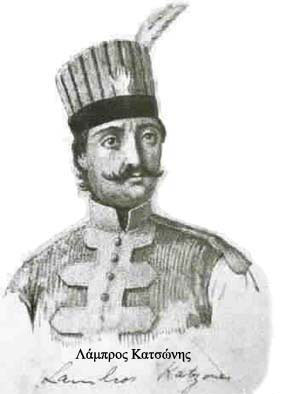

| Προεπαναστατικά κινήματα στον ελλαδικό χώρο  Οι θρήνοι για την άλωση της Πόλης, που εκφράζουν όχι μόνο τη θλίψη και την απελπισία αλλά και την πίστη για τη λευτεριά, ο θρύλος του μαρμαρωμένου βασιλιά και οι προφητείες που προέβλεπαν την ανάσταση του Γένους, αναθέρμαιναν τις ελπίδες των υπόδουλων Ελλήνων. Επαναστατικά απελευθερωτικά κινήματα ξέσπασαν καθ’ όλη τη διάρκεια της οθωμανικής κυριαρχίας, τα οποία όμως απέτυχαν εξαιτίας του τοπικού τους χαρακτήρα, της κακής προετοιμασίας και οργάνωσης, αλλά και της έλλειψης μαζικής συμμετοχής. Τα σημαντικότερα κινήματα είναι του Κροκόδειλου Κλαδά (1480 – 1481), του Μητροπολίτη Λαρίσης – Τρίκκης Διονυσίου Φιλόσοφου (1600 και 1611), τα «Ορλωφικά» στο περιθώριο του πρώτου Ρωσοτουρκικού πολέμου (1768 – 1774) με ξεσηκωμό της Πελοποννήσου (1769) από τους Αλέξιο και Θεόδωρο Ορλώφ και η επαναστατική δράση στο Αιγαίο του Λάμπρου Κατσώνη κατά τον δεύτερο ρωσοτουρκικό πόλεμο (1787 – 1792). |
||